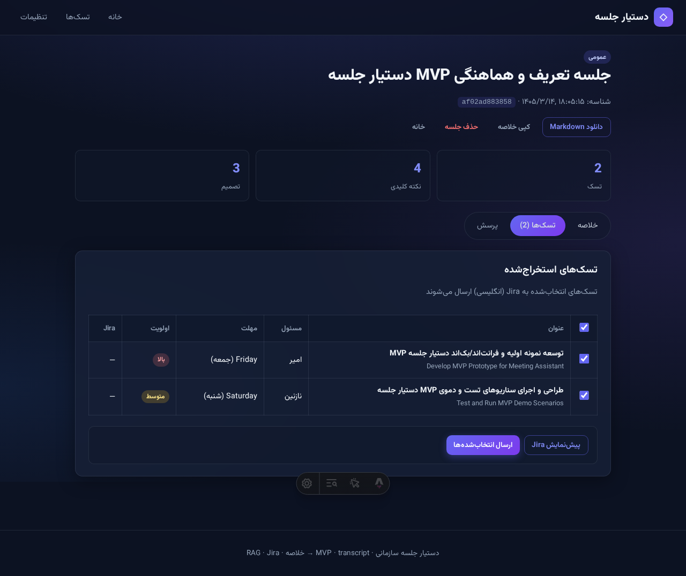
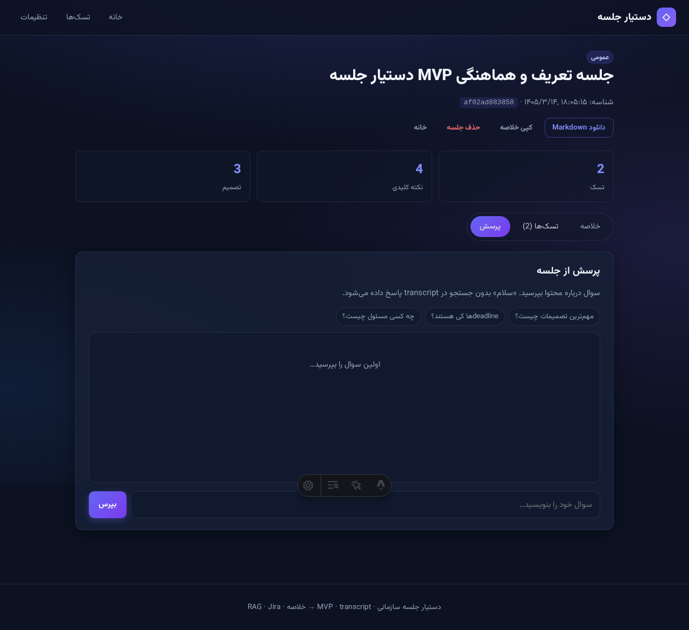
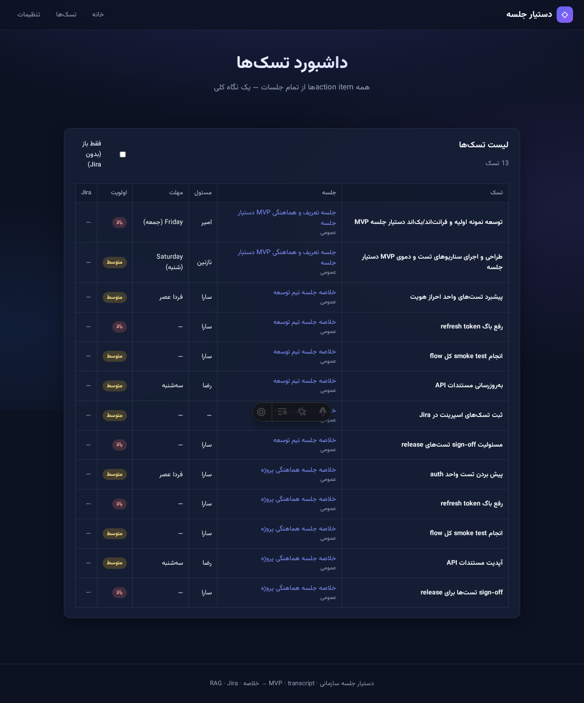
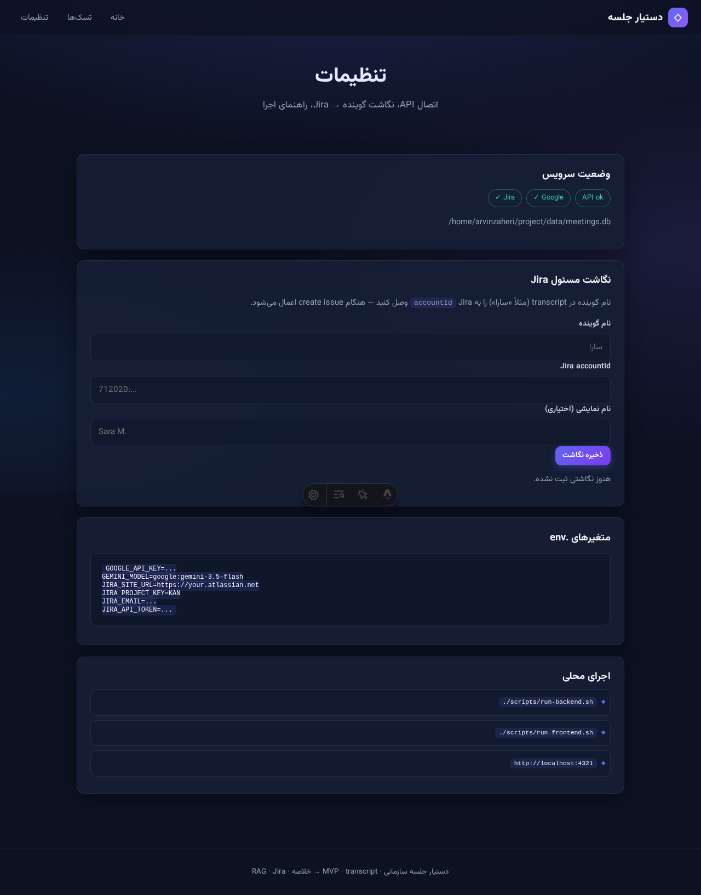

تبدیل transcript جلسات فارسی به خروجی عملیاتی: خلاصه، تسک، پرسشوپاسخ RAG، و ثبت در Jira.
| قابلیت | نسخه کامل (سند اولیه) | MVP فعلی |
|---|---|---|
| ورودی | ضبط صوت زنده + STT streaming | ✅ transcript (paste + فایل متنی) · ✅ صوت (آپلود/ضبط → Gemini) |
| تحلیل | GPT-4 / مدلهای متنوع | ✅ Gemini Flash + Pydantic AI |
| جستجو / Vector DB | ElasticSearch | ✅ ChromaDB embedded (data/chroma/) |
| تسک | Jira + Trello + Asana + … | ✅ فقط Jira (KAN) — issueها انگلیسی |
| RAG | آرشیو سازمان | ✅ تکجلسه · ⏳ چندجلسه sprint 2 |
| تقویم / Teams | ادغام کامل | ❌ sprint بعد |
| داشبورد / اعلان | گزارش هفتگی | ❌ sprint بعد |
sequenceDiagram
participant U as کاربر
participant UI as Astro RTL
participant API as FastAPI
participant G as Gemini
participant AA as analysis_agent
participant RA as rag_agent
participant C as ChromaDB
participant J as Jira KAN
U->>UI: transcript / صوت / جلسه نمونه
opt فایل یا ضبط صوتی
UI->>API: POST /api/transcribe
API->>G: Gemini audio → متن
API-->>UI: transcript
end
UI->>API: POST /api/meetings
API->>API: parse + chunk + embed
API->>C: index chunks
API->>AA: run(transcript)
AA-->>UI: خلاصه + تسکها (SSR)
U->>UI: سوال RAG
UI->>API: POST /ask
API->>C: query by meeting_id
API->>RA: context + سوال
RA-->>UI: پاسخ طبیعی + footnote
U->>UI: تأیید تسک
UI->>API: POST /jira/create
API->>J: issue جدید
ورود صوت جدا از ingest است تا paste متنی و جلسات نمونه بدون تغییر بمانند.
همان GOOGLE_API_KEY و GEMINI_MODEL — بدون سرویس Speech-to-Text جدا.
| مرحله | جزئیات |
|---|---|
| UI | آپلود mp3, wav, m4a, ogg, webm, flac یا دکمه ضبط صوت (MediaRecorder) |
| API | POST /api/transcribe — multipart file → Gemini generateContent با inline audio |
| خروجی | transcript فارسی با فرمت [MM:SS] name: text — قابل ویرایش قبل از تحلیل |
| محدودیت | حداکثر 20MB (MAX_AUDIO_BYTES) |
| بعد از رونویسی | همان POST /api/meetings — analysis، Chroma، RAG، Jira |
| مورد | مقدار |
|---|---|
| فایل | data/meetings.db |
| جدول | meetings | — transcript، summary، key_points، decisions، tasks (JSON)
| مهاجرت | فایلهای قدیمی data/meetings/*.json یکبار در اولین اجرا import میشوند |
data/chroma/، جستجوی HNSW سریع.
| مورد | مقدار |
|---|---|
| کتابخانه | chromadb |
| Collection | meeting_chunks |
| فیلتر | metadata.meeting_id |
| Embedding | gemini-embedding-001 | (از Google API — Chroma فقط ذخیره/جستجو)
| فاصله | cosine (HNSW) |
from pydantic import BaseModel
from pydantic_ai import Agent
class MeetingAnalysis(BaseModel):
title: str
summary: str
key_points: list[str]
decisions: list[str]
tasks: list[MeetingTask]
analysis_agent = Agent(
'google:gemini-3.5-flash',
output_type=MeetingAnalysis,
system_prompt='تحلیل transcript جلسه فارسی. فقط بر اساس متن.',
)# تشخیص small talk
is_small_talk("hello") → chitchat_agent, sources=[]
# سوال واقعی
chunks = chroma.query(meeting_id, question)
rag_agent.run(context + question) → RagAnswertitle_en, context_en) برای خوانایی LTR در Jira — UI همچنان فارسی.
flowchart TB
subgraph pages ["صفحات — RTL"]
home["/ خانه"]
meeting["/meeting/id"]
settings["/settings"]
end
subgraph tabs ["تبهای جلسه"]
tab1["خلاصه و تصمیمات"]
tab2["تسکها + Jira"]
tab3["پرسش از جلسه"]
end
home --> meeting
meeting --> tabs
قواعد RTL/LTR:
html lang="fa" dir="rtl" — متن فارسی راستچینdir="ltr"direction: ltrصفحه /meeting/[id] داده را در سرور Astro از FastAPI میگیرد (نه فقط client JS) — رفع مشکل گیر کردن روی «در حال بارگذاری».




| Method | Path | توضیح |
|---|---|---|
| GET | /api/meetings | لیست جلسات |
| POST | /api/transcribe | رونویسی فایل صوتی با Gemini (همان API key) |
| POST | /api/meetings | ingest + analysis_agent |
| POST | /api/meetings/{id}/ask | rag_agent |
| POST | /api/meetings/{id}/jira/preview | پیشنمایش issue |
| POST | /api/meetings/{id}/jira/create | ایجاد در Jira |
| فایل | موضوع |
|---|---|
| meeting-01-scrum.txt | استنداپ هفتگی |
| meeting-02-planning.txt | برنامهریزی MVP |
| meeting-03-review.txt | بازبینی sprint |
فرمت: [۱۴:۰۲] علی: متن گفتار
GOOGLE_API_KEY=...
EMBEDDING_MODEL=gemini-embedding-001
GEMINI_MODEL=google:gemini-3.5-flash
MAX_AUDIO_BYTES=20971520
JIRA_SITE_URL=https://arvinzaheri17.atlassian.net
JIRA_PROJECT_KEY=KAN
JIRA_EMAIL=your@email.com
JIRA_API_TOKEN=...
PUBLIC_BACKEND_URL=http://127.0.0.1:8000project/
├── frontend/ # Astro SSR — UI فارسی RTL
├── backend/
│ ├── main.py
│ ├── agents/ # analysis_agent, rag_agent
│ ├── services/ # sqlite, chroma, jira, embed, audio_transcribe
│ └── models/
├── data/synthetic/ # جلسات نمونه
├── data/meetings.db # SQLite — خلاصه و تسکها
├── data/chroma/ # ChromaDB persist
├── docs/ # HTML + CHANGELOG
└── scripts/ # run-backend, run-tests, run-live-tests| نوع | دستور | تعداد |
|---|---|---|
| واحد (mock) | ./scripts/run-tests.sh | ۱۳۷ |
| live API | ./scripts/run-live-tests.sh | ۱۲ (HTTP + سرویس) |
| همه | ./scripts/run-all-tests.sh | واحد + live |
| خطا | رفتار |
|---|---|
| Gemini timeout | retry ×1 + پیام فارسی |
| Transcript بدون speaker | برچسب [ناشناس] |
| Jira 401 | راهنمای بررسی .env |
| فایل صوتی نامعتبر / بزرگ | ۴۰۰ فارسی — فرمت یا MAX_AUDIO_BYTES |
| Gemini billing (403 dunning) | پیام فارسی راهنمای billing — رونویسی و تحلیل |
| RAG بدون match | «در این جلسه یافت نشد» |